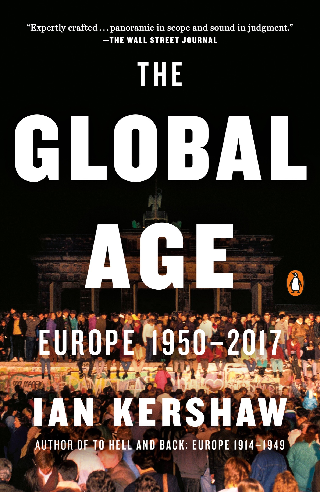

READING & IA — 企鹅欧洲史 · PENGUIN EUROPE

本页仅收录官方预览 / 授权试读与图书馆记录等可核验出处，不提供未经授权的全文镜像。全文以正式出版与馆藏借阅为准。This page links only verifiable sources — official previews, licensed samples, and library/OverDrive records. No unlicensed full-text mirrors. The complete original is obtained via the published edition or library loan.
✓
章旨 · Chapter argument：Foreword —— Kershaw 自设框架：欧洲的两个不安时代 (1900-1950 与 1990 至今)。1950-1990 是中间的稳定化例外 —— 使全书 12 章不再是编年而是『不安-稳定-再不安』的对称。显式回应 Vol.8 的 Introduction。Argument: Foreword —— Kershaw 自设框架：欧洲的两个不安时代 (1900-1950 与 1990 至今)。1950-1990 是中间的稳定化例外 —— 使全书 12 章不再是编年而是『不安-稳定-再不安』的对称。显式回应 Vol.8 的 Introduction。
论证展开 · Argument development：两个不安时代的对称说明 → 1950-1990 稳定的四大支柱 (冷战均势、美国保护伞、福利国家、欧洲一体化) → 每一支柱如何在 1990 后同时变成新问题来源 → 12 章结构说明 → 与 Vol.8 (To Hell and Back) 的显式衔接。Development: 两个不安时代的对称说明 → 1950-1990 稳定的四大支柱 (冷战均势、美国保护伞、福利国家、欧洲一体化) → 每一支柱如何在 1990 后同时变成新问题来源 → 12 章结构说明 → 与 Vol.8 (To Hell and Back) 的显式衔接。
关键人物 · 事件 · 年代 · 地名：Kershaw 自己在两卷之间的方法声明 —— 与 Judt (2005《战后》)、Mazower (1998《黑暗大陆》)、Hobsbawm (1994《极端的年代》)、Offe 的欧洲一体化讨论对话Key figures · events · dates · places: Kershaw 自己在两卷之间的方法声明 —— 与 Judt (2005《战后》)、Mazower (1998《黑暗大陆》)、Hobsbawm (1994《极端的年代》)、Offe 的欧洲一体化讨论对话
材料与方法 · Evidence base：跨段一手材料预告：各国内阁档案、欧共体委员会文件、KGB/Stasi 档案、东欧 1989 记录、难民与恐袭统计、欧元区危机欧洲央行报告Evidence: 跨段一手材料预告：各国内阁档案、欧共体委员会文件、KGB/Stasi 档案、东欧 1989 记录、难民与恐袭统计、欧元区危机欧洲央行报告
章际关系 · Relation to neighbouring chapters：显式回应 Vol.8 —— 两卷构成一个长 20 世纪。Chapter link: 显式回应 Vol.8 —— 两卷构成一个长 20 世纪。
✓
src EPUB TOC extracted from original book
章旨 · Chapter argument：Ch.1 The Tense Divide (1945-1953) —— 铁幕落下、希腊内战、柏林封锁、朝鲜战争、斯大林死亡。欧洲在两副格局中的冻结。Argument: Ch.1 The Tense Divide (1945-1953) —— 铁幕落下、希腊内战、柏林封锁、朝鲜战争、斯大林死亡。欧洲在两副格局中的冻结。
论证展开 · Argument development：雅尔塔 (1945.2) 与波茨坦 (7-8) 的分区安排 → 希腊内战 (1946-49 民族阵线 EAM vs 保皇派)、土耳其危机 (1945-47)、Truman Doctrine (1947.3)、马歇尔计划 (1947.6)、Cominform (1947.9)、捷克二月政变 (1948.2)、Berlin 封锁 (1948.6-1949.5)、北约 (1949.4)、德国分裂 (1949.9 BRD/DDR)、朝鲜战争 (1950-53)、斯大林死亡 (1953.3)、柏林六月起义 (1953)、贝利亚失势、马林科夫-赫鲁晓夫过渡。Development: 雅尔塔 (1945.2) 与波茨坦 (7-8) 的分区安排 → 希腊内战 (1946-49 民族阵线 EAM vs 保皇派)、土耳其危机 (1945-47)、Truman Doctrine (1947.3)、马歇尔计划 (1947.6)、Cominform (1947.9)、捷克二月政变 (1948.2)、Berlin 封锁 (1948.6-1949.5)、北约 (1949.4)、德国分裂 (1949.9 BRD/DDR)、朝鲜战争 (1950-53)、斯大林死亡 (1953.3)、柏林六月起义 (1953)、贝利亚失势、马林科夫-赫鲁晓夫过渡。
关键人物 · 事件 · 年代 · 地名：Truman、Stalin、Attlee、Bevin、Molotov、Zhukov、Gomulka、Bierut、Rákösi、Gottwald、Slánský、Markos、Zachariadis、Dimitrov、Tito、De Gaulle、Schuman、Adenauer、Hess、Brandenburg、Churchill (1946 铁幕)、Khrushchev、Beria、Malenkov、Kim Il Sung、Syngman Rhee、MacArthur、BradleyKey figures · events · dates · places: Truman、Stalin、Attlee、Bevin、Molotov、Zhukov、Gomulka、Bierut、Rákösi、Gottwald、Slánský、Markos、Zachariadis、Dimitrov、Tito、De Gaulle、Schuman、Adenauer、Hess、Brandenburg、Churchill (1946 铁幕)、Khrushchev、Beria、Malenkov、Kim Il Sung、Syngman Rhee、MacArthur、Bradley
材料与方法 · Evidence base：国务院 FRUS 1945-53、Cominform 文件、苏联共产党中央全会记录、波兰 IPN 档案、匈牙利 MOL、捷克 ABS、朝鲜战争各方军事档案、Churchill《Iron Curtain》演讲全文Evidence: 国务院 FRUS 1945-53、Cominform 文件、苏联共产党中央全会记录、波兰 IPN 档案、匈牙利 MOL、捷克 ABS、朝鲜战争各方军事档案、Churchill《Iron Curtain》演讲全文
章际关系 · Relation to neighbouring chapters：为 Ch.2 (Western Europe 建立) 与 Ch.3 (The Clamp) 提供对称框架 —— 一西一东。Chapter link: 为 Ch.2 (Western Europe 建立) 与 Ch.3 (The Clamp) 提供对称框架 —— 一西一东。
✓
src EPUB TOC extracted from original book
章旨 · Chapter argument：Ch.2 The Making of Western Europe (1947-1957) —— 马歇尔计划、欧共体前身 (ECSC 1951、EEC 1957)、联邦德国重建、社会民主-基民党共识。战后西欧洲的制度奠基。Argument: Ch.2 The Making of Western Europe (1947-1957) —— 马歇尔计划、欧共体前身 (ECSC 1951、EEC 1957)、联邦德国重建、社会民主-基民党共识。战后西欧洲的制度奠基。
论证展开 · Argument development：马歇尔计划实施 (1948-1952) 与 OEEC → 欧洲委员会 (1949.5) → Schuman Declaration (1950.5.9) 与 ECSC 巴黎条约 (1951.4.18) → 欧洲防务共同体 EDC 与法国议会否决 (1954.8.30) → 伦敦-巴黎条约 (1954.10) 与 WEU、联邦德国加入北约 → Adenauer 与德国经济奇迹 (Erhard 1948 货币改革与社会市场经济) → Spaak Report (1956) 与罗马条约 (1957.3.25 EEC + Euratom) → 法国第四共和国终结 (1958.10) 与戴高乐第五共和国 → 英国申请的第一次被否决 (1963 de Gaulle veto)。Development: 马歇尔计划实施 (1948-1952) 与 OEEC → 欧洲委员会 (1949.5) → Schuman Declaration (1950.5.9) 与 ECSC 巴黎条约 (1951.4.18) → 欧洲防务共同体 EDC 与法国议会否决 (1954.8.30) → 伦敦-巴黎条约 (1954.10) 与 WEU、联邦德国加入北约 → Adenauer 与德国经济奇迹 (Erhard 1948 货币改革与社会市场经济) → Spaak Report (1956) 与罗马条约 (1957.3.25 EEC + Euratom) → 法国第四共和国终结 (1958.10) 与戴高乐第五共和国 → 英国申请的第一次被否决 (1963 de Gaulle veto)。
关键人物 · 事件 · 年代 · 地名：Schuman、Adenauer、de Gasperi、Spaak、Monnet、Beyen、Hallstein、Erhard、Söderblom、Mollet、Giscard d'Estaing (作为财政部长 1956)、Mendes-France、Eisenhower、Dulles、Bevin、Attlee、Macmillan、Eden、Gaitskell、Kiesinger、Ollenhauer、Brandt (作为柏林市长 1957)Key figures · events · dates · places: Schuman、Adenauer、de Gasperi、Spaak、Monnet、Beyen、Hallstein、Erhard、Söderblom、Mollet、Giscard d'Estaing (作为财政部长 1956)、Mendes-France、Eisenhower、Dulles、Bevin、Attlee、Macmillan、Eden、Gaitskell、Kiesinger、Ollenhauer、Brandt (作为柏林市长 1957)
材料与方法 · Evidence base：EEC 罗马条约、ECSC 巴黎条约、OEEC 报告、法国与意大利议会辩论、德国联邦议院记录、Adenauer 书信、Monnet《Memoirs》(1976)、Hallstein 文件、Bundeskarchiv、Archives nationales、法国战争部档案Evidence: EEC 罗马条约、ECSC 巴黎条约、OEEC 报告、法国与意大利议会辩论、德国联邦议院记录、Adenauer 书信、Monnet《Memoirs》(1976)、Hallstein 文件、Bundeskarchiv、Archives nationales、法国战争部档案
章际关系 · Relation to neighbouring chapters：与 Ch.3 (The Clamp) 形成对称 —— 西欧一体化与东欧苏联化。Chapter link: 与 Ch.3 (The Clamp) 形成对称 —— 西欧一体化与东欧苏联化。
✓
src EPUB TOC extracted from original book
章旨 · Chapter argument：Ch.3 The Clamp (1953-1968) —— 东欧 1953、波兹南 1956、布拉格之春前夜、柏林墙 1961。铁幕在东欧收紧并压制改革。Argument: Ch.3 The Clamp (1953-1968) —— 东欧 1953、波兹南 1956、布拉格之春前夜、柏林墙 1961。铁幕在东欧收紧并压制改革。
论证展开 · Argument development：斯大林 1953.3 死亡与后斯大林过渡 → 东德 1953.6.17 起义与苏联坦克 → 波兰 1956 波兹南 6 月起义与哥穆尔卡上台 → 匈牙利 1956.10-11 革命与苏联第二次干涉、Nagy 处决 (1958.6.16) → 苏联 1956.2 二十大赫鲁晓夫『秘密报告』与去斯大林化 → 中苏论战 → 柏林墙 1961.8.13 修建与 1962.8 彼得·费希特之死 → 古巴导弹危机 (1962.10) 与美苏缓和 → 法国-西德 Elysée 条约 (1963.1.22)、空椅子危机 (1965) 与卢森堡妥协 → 苏联 1964 赫鲁晓夫下台与勃列日涅夫 → 越南战争与欧洲 → 捷克斯洛伐克 1968 布拉格之春 (1-8) 与苏联华约八月入侵 (8.20-21)、Dubček 被押送至莫斯科、Husák 正常化、Jan Palach 自焚 (1969.1.16)。Development: 斯大林 1953.3 死亡与后斯大林过渡 → 东德 1953.6.17 起义与苏联坦克 → 波兰 1956 波兹南 6 月起义与哥穆尔卡上台 → 匈牙利 1956.10-11 革命与苏联第二次干涉、Nagy 处决 (1958.6.16) → 苏联 1956.2 二十大赫鲁晓夫『秘密报告』与去斯大林化 → 中苏论战 → 柏林墙 1961.8.13 修建与 1962.8 彼得·费希特之死 → 古巴导弹危机 (1962.10) 与美苏缓和 → 法国-西德 Elysée 条约 (1963.1.22)、空椅子危机 (1965) 与卢森堡妥协 → 苏联 1964 赫鲁晓夫下台与勃列日涅夫 → 越南战争与欧洲 → 捷克斯洛伐克 1968 布拉格之春 (1-8) 与苏联华约八月入侵 (8.20-21)、Dubček 被押送至莫斯科、Husák 正常化、Jan Palach 自焚 (1969.1.16)。
关键人物 · 事件 · 年代 · 地名：Khrushchev、Malenkov、Zhukov、Beria、Gomulka、Cyrankiewicz、Polish October 诸人、Nagy、Kádár、Dudás、Pál Maléter、Molnár、Dubček、Svoboda、Husák、Šváb、Cerník、Hájek、Brezhnev、Andropov、Podgorny、Shelepin、Semichastny、Ulbricht、Honecker、Gheorghiu-Dej、Ceaușescu (1965 上台)、Tito、Goncz (稍后)Key figures · events · dates · places: Khrushchev、Malenkov、Zhukov、Beria、Gomulka、Cyrankiewicz、Polish October 诸人、Nagy、Kádár、Dudás、Pál Maléter、Molnár、Dubček、Svoboda、Husák、Šváb、Cerník、Hájek、Brezhnev、Andropov、Podgorny、Shelepin、Semichastny、Ulbricht、Honecker、Gheorghiu-Dej、Ceaușescu (1965 上台)、Tito、Goncz (稍后)
材料与方法 · Evidence base：东欧各国党报与决议、波兰 IPN、匈牙利 MOL、捷克 ABS 与 ÚSTR、东德 BStU (Stasi 档案)、苏联中央全会与政治局记录、华约联合司令部档案、Dubček 与 Svoboda 与勃列日涅夫 8 月谈判纪要 (Zbraslavia 会议)Evidence: 东欧各国党报与决议、波兰 IPN、匈牙利 MOL、捷克 ABS 与 ÚSTR、东德 BStU (Stasi 档案)、苏联中央全会与政治局记录、华约联合司令部档案、Dubček 与 Svoboda 与勃列日涅夫 8 月谈判纪要 (Zbraslavia 会议)
章际关系 · Relation to neighbouring chapters：为 Ch.4 (Good Times) 与 Ch.7 (The Turn) 铺路 —— 东欧的压制与西欧洲的繁荣互为对照。Chapter link: 为 Ch.4 (Good Times) 与 Ch.7 (The Turn) 铺路 —— 东欧的压制与西欧洲的繁荣互为对照。
✓
src EPUB TOC extracted from original book
章旨 · Chapter argument：Ch.4 Good Times (1950-1973) —— 黄金三十年：高增长、福利国家、消费社会、青年文化、移民、性别革命、色情合法化。Kershaw 与 Judt/Hobsbawm 有分歧 —— 黄金三十年首先是物质与文化的双重突破。Argument: Ch.4 Good Times (1950-1973) —— 黄金三十年：高增长、福利国家、消费社会、青年文化、移民、性别革命、色情合法化。Kershaw 与 Judt/Hobsbawm 有分歧 —— 黄金三十年首先是物质与文化的双重突破。
论证展开 · Argument development：人口 (婴儿潮 1946-1964、欧洲人口 5.5 亿 → 7.7 亿) → 经济 (GNP 年均 4-5%、失业率 1-2%、通胀 2-4%) → 福利国家 (Beveridge 1942 英国、Sécurité sociale 1945 法国、德国 1950s 社会保险改革、北欧模式) → 消费社会 (汽车普及 1955-1970、电视 1953 加冕直播 1964 卫星、洗衣机、冰箱、超市、快消) → 城市化与郊区化、高速公路、大众旅游 (Costa Briva、Algarve) → 青年文化 (摇滚 1956 Elvis、1964 Beatles、Mods、Rockers、嬉皮、1968 学生) → 性革命 (口服避孕药 1960 FDA、色情出版、1967 英国性犯罪法改革、Kinsey 报告 1948/1953) → 移民 (土耳其到德国 Gastarbeiter 1961、北非到法国、加勒比到英国、南欧到瑞士-比利时) → 教育扩张 (大学人口 3% → 15%)。Development: 人口 (婴儿潮 1946-1964、欧洲人口 5.5 亿 → 7.7 亿) → 经济 (GNP 年均 4-5%、失业率 1-2%、通胀 2-4%) → 福利国家 (Beveridge 1942 英国、Sécurité sociale 1945 法国、德国 1950s 社会保险改革、北欧模式) → 消费社会 (汽车普及 1955-1970、电视 1953 加冕直播 1964 卫星、洗衣机、冰箱、超市、快消) → 城市化与郊区化、高速公路、大众旅游 (Costa Briva、Algarve) → 青年文化 (摇滚 1956 Elvis、1964 Beatles、Mods、Rockers、嬉皮、1968 学生) → 性革命 (口服避孕药 1960 FDA、色情出版、1967 英国性犯罪法改革、Kinsey 报告 1948/1953) → 移民 (土耳其到德国 Gastarbeiter 1961、北非到法国、加勒比到英国、南欧到瑞士-比利时) → 教育扩张 (大学人口 3% → 15%)。
关键人物 · 事件 · 年代 · 地名：Beveridge、Erhard、Schuman、de Gasperi、Macmillan、Khrushchev 古巴之后的『古拉什资本主义』提议、Wilson、Brandt (作为西柏林市长 1957-66)、Adenauer、Kennedy、Johnson、Mau 运动、De Gaulle、Pompidou、Heath、Willy Brandt、Kiesinger、Ollenhauer、Brecht (东德)、Shostakovich (苏联解冻)、Chagall、Auden (作为 1956 后的观察者)；文化人物：Elvis、Beatles、Rolling Stones、Jimi Hendrix、Janis Joplin、Jim Morrison、Marlon Brando、James Dean、Brigitte Bardot、Jane FondaKey figures · events · dates · places: Beveridge、Erhard、Schuman、de Gasperi、Macmillan、Khrushchev 古巴之后的『古拉什资本主义』提议、Wilson、Brandt (作为西柏林市长 1957-66)、Adenauer、Kennedy、Johnson、Mau 运动、De Gaulle、Pompidou、Heath、Willy Brandt、Kiesinger、Ollenhauer、Brecht (东德)、Shostakovich (苏联解冻)、Chagall、Auden (作为 1956 后的观察者)；文化人物：Elvis、Beatles、Rolling Stones、Jimi Hendrix、Janis Joplin、Jim Morrison、Marlon Brando、James Dean、Brigitte Bardot、Jane Fonda
材料与方法 · Evidence base：各国统计局 OECD 历史统计 (1950-1973)、Beveridge 报告原文、家庭收支调查、Mass Observation 归档 (英国)、Allensbach 调查 (德国)、IFOP (法国)、1968 学生运动小报与海报、唱片目录与音乐会节目、避孕药与性教育出版物、移民劳工档案Evidence: 各国统计局 OECD 历史统计 (1950-1973)、Beveridge 报告原文、家庭收支调查、Mass Observation 归档 (英国)、Allensbach 调查 (德国)、IFOP (法国)、1968 学生运动小报与海报、唱片目录与音乐会节目、避孕药与性教育出版物、移民劳工档案
章际关系 · Relation to neighbouring chapters：为 Ch.6 (Challenges) 与 Ch.7 (The Turn) 铺路 —— 1973 石油危机终结黄金时代。Chapter link: 为 Ch.6 (Challenges) 与 Ch.7 (The Turn) 铺路 —— 1973 石油危机终结黄金时代。
✓
src EPUB TOC extracted from original book
章旨 · Chapter argument：Ch.5 Culture After the Catastrophe (1945-1970s) —— Adorno『写诗是野蛮的』(1949) 之问、战后哲学 (海德格尔争议、萨特-加缪-梅洛-庞蒂、结构主义列维-斯特劳斯、福柯、德里达、巴特、拉康)、电影新浪潮 (法国 1959-、意大利新现实主义、瑞典伯格曼、苏联塔可夫斯基、日本黑泽明)、先锋派 (具体音乐、序列主义、激浪派、Fluxus)、德国批判理论 (法兰克福学派第二代 Habermas)。Argument: Ch.5 Culture After the Catastrophe (1945-1970s) —— Adorno『写诗是野蛮的』(1949) 之问、战后哲学 (海德格尔争议、萨特-加缪-梅洛-庞蒂、结构主义列维-斯特劳斯、福柯、德里达、巴特、拉康)、电影新浪潮 (法国 1959-、意大利新现实主义、瑞典伯格曼、苏联塔可夫斯基、日本黑泽明)、先锋派 (具体音乐、序列主义、激浪派、Fluxus)、德国批判理论 (法兰克福学派第二代 Habermas)。
论证展开 · Argument development：Adorno 与 Horkheimer《启蒙辩证法》(1947) 与『奥斯维辛之后写诗是野蛮的』(1949) → Sartre《存在与虚无》(1943)《辩证理性批判》(1960)、Camus《西西弗神话》(1942)《反抗者》(1951)、Beauvoir《第二性》(1949)、Merleau-Ponty《知觉现象学》(1945) → 结构主义与后结构主义 (Levi-Strauss《忧郁的热带》1955、Barthes《神话学》1957、Lacan《文集》1966、Derrida《论文字学》1967、Foucault《疯癫史》1961《词与物》1966《知识考古学》1969) → 剧场 (Beckett《等待戈多》1953、Ionesco《秃头歌女》1950、Genet、Pinter、Frish、Weiss《调查》1965) → 小说 (Robbe-Grillet、Butor、Sarraute、Cortázar、Calvino、Böll、Grass《铁皮鼓》1959、Lampedusa《豹》1958、Soliženicyn《伊凡·杰尼索维奇的一天》1962、Paz) → 绘画与雕塑 (抽象表现主义 Pollock、Rothko、de Kooning、战后巴黎学院派、Cobra、Giacometti、Henry Moore、Dubuffet、战后德国 Baselitz、Kiefer、Richter、Beuys) → 电影 (意大利新现实主义 Rossellini、De Sica、Visconti、Fellini《甜蜜的生活》1960、Antonioni；法国新浪潮 Truffaut 400 击 1959、Godard 精疲力尽 1960、Resnais、Varda；瑞典伯格曼、意大利帕索里尼、苏联塔可夫斯基《安德烈·卢布廖夫》1966、日本黑泽明、Satyajit Ray) → 音乐 (Boulez、Stockhausen、Cage、Shostakovich 5-15、Britten、Shostakovich、Benjamin Britten 作为英国)。Development: Adorno 与 Horkheimer《启蒙辩证法》(1947) 与『奥斯维辛之后写诗是野蛮的』(1949) → Sartre《存在与虚无》(1943)《辩证理性批判》(1960)、Camus《西西弗神话》(1942)《反抗者》(1951)、Beauvoir《第二性》(1949)、Merleau-Ponty《知觉现象学》(1945) → 结构主义与后结构主义 (Levi-Strauss《忧郁的热带》1955、Barthes《神话学》1957、Lacan《文集》1966、Derrida《论文字学》1967、Foucault《疯癫史》1961《词与物》1966《知识考古学》1969) → 剧场 (Beckett《等待戈多》1953、Ionesco《秃头歌女》1950、Genet、Pinter、Frish、Weiss《调查》1965) → 小说 (Robbe-Grillet、Butor、Sarraute、Cortázar、Calvino、Böll、Grass《铁皮鼓》1959、Lampedusa《豹》1958、Soliženicyn《伊凡·杰尼索维奇的一天》1962、Paz) → 绘画与雕塑 (抽象表现主义 Pollock、Rothko、de Kooning、战后巴黎学院派、Cobra、Giacometti、Henry Moore、Dubuffet、战后德国 Baselitz、Kiefer、Richter、Beuys) → 电影 (意大利新现实主义 Rossellini、De Sica、Visconti、Fellini《甜蜜的生活》1960、Antonioni；法国新浪潮 Truffaut 400 击 1959、Godard 精疲力尽 1960、Resnais、Varda；瑞典伯格曼、意大利帕索里尼、苏联塔可夫斯基《安德烈·卢布廖夫》1966、日本黑泽明、Satyajit Ray) → 音乐 (Boulez、Stockhausen、Cage、Shostakovich 5-15、Britten、Shostakovich、Benjamin Britten 作为英国)。
关键人物 · 事件 · 年代 · 地名：Adorno、Horkheimer、Marcuse、Benjamin (1940 亡)、Sartre、Camus、Beauvoir、Merleau-Ponty、Levinas、Blanchot、Heidegger (1945 后的禁令与争议)、Jaspers (苏黎世)、Bultmann、Barth、Tillich (1955 芝加哥)、Lewis、Tolkien；Levi-Strauss、Barthes、Lacan、Derrida、Foucault、Deleuze、Bourdieu；Beckett、Ionesco、Adamov、Pinter、Genet、Frish、Weiss、Beckett；Robbe-Grillet、Butor、Sarraute、Simon、Calvino、Böll、Grass、Lampedusa、Solzhenitsyn、Pasternak、Akhmatova、Cvetaeva、Cortázar、Borges、Paz、Neruda；Cobra、Bazaine、Dubuffet、Hartung、Mathieu、Richter、Pollock、Rothko、de Kooning、Kline、Baselitz、Kiefer、Penck、Richter、Beuys、Giacometti、Moore、Hepworth；Rossellini、De Sica、Visconti、Fellini、Antonioni、Bergman、Pasolini、Tarkovsky、Bresson、Truffaut、Godard、Chabrol、Rivette、Rohmer、Resnais、Varda、Wajda、Hui、Satyajit Ray、Kurosawa、Oshima；Boulez、Stockhausen、Cage、Berio、Ligeti、Shostakovich、Prokofiev (1953 亡)、Khachaturian、Benjamin Britten、Henze、Nono、XenakisKey figures · events · dates · places: Adorno、Horkheimer、Marcuse、Benjamin (1940 亡)、Sartre、Camus、Beauvoir、Merleau-Ponty、Levinas、Blanchot、Heidegger (1945 后的禁令与争议)、Jaspers (苏黎世)、Bultmann、Barth、Tillich (1955 芝加哥)、Lewis、Tolkien；Levi-Strauss、Barthes、Lacan、Derrida、Foucault、Deleuze、Bourdieu；Beckett、Ionesco、Adamov、Pinter、Genet、Frish、Weiss、Beckett；Robbe-Grillet、Butor、Sarraute、Simon、Calvino、Böll、Grass、Lampedusa、Solzhenitsyn、Pasternak、Akhmatova、Cvetaeva、Cortázar、Borges、Paz、Neruda；Cobra、Bazaine、Dubuffet、Hartung、Mathieu、Richter、Pollock、Rothko、de Kooning、Kline、Baselitz、Kiefer、Penck、Richter、Beuys、Giacometti、Moore、Hepworth；Rossellini、De Sica、Visconti、Fellini、Antonioni、Bergman、Pasolini、Tarkovsky、Bresson、Truffaut、Godard、Chabrol、Rivette、Rohmer、Resnais、Varda、Wajda、Hui、Satyajit Ray、Kurosawa、Oshima；Boulez、Stockhausen、Cage、Berio、Ligeti、Shostakovich、Prokofiev (1953 亡)、Khachaturian、Benjamin Britten、Henze、Nono、Xenakis
材料与方法 · Evidence base：一手哲学与理论原文、剧作与小说文本、电影拷贝与海报、音乐乐谱与录音、画展目录、同时人书信、各国审查档案 (法国、意大利、苏联、东欧)Evidence: 一手哲学与理论原文、剧作与小说文本、电影拷贝与海报、音乐乐谱与录音、画展目录、同时人书信、各国审查档案 (法国、意大利、苏联、东欧)
章际关系 · Relation to neighbouring chapters：与 Vol.8 Ch.9 呼应 —— 即便最深崩塌之后，文化生产仍在缓慢重构。Chapter link: 与 Vol.8 Ch.9 呼应 —— 即便最深崩塌之后，文化生产仍在缓慢重构。
✓
src EPUB TOC extracted from original book
章旨 · Chapter argument：Ch.6 Challenges (1968-1979) —— 1968、布拉格之春、意大利红旅、石油危机、北爱尔兰问题、德国红军派、波兰教宗年代 —— 共识政治受压。这一节把 1968-79 处理为『黄金时代之后、新自由主义之前』的十年危机。Argument: Ch.6 Challenges (1968-1979) —— 1968、布拉格之春、意大利红旅、石油危机、北爱尔兰问题、德国红军派、波兰教宗年代 —— 共识政治受压。这一节把 1968-79 处理为『黄金时代之后、新自由主义之前』的十年危机。
论证展开 · Argument development：1968 全球学生运动 (法国五月、柏林 Rudi Dutschke、墨西哥 Tlatelolco、芝加哥 DNC、华沙三月事件、罗马 Valle Giulia) → 布拉格之春 (1968.1-8) 与华约入侵 (8.20) → 波兰 1968 反犹清洗、1970 十二月抗议 → 意大利『铅色年代』(1969 Piazza Fontana 炸弹 → 1978 Aldo Moro 绑架与杀害 → 红旅与极左) → 德国红军派 RAF (1970-、Holzmann、Ensslin、Baader、Raspe → 1977 春 Stammheim 监狱自杀) → 西班牙 ETA (1968-) 与 Carrero 暗杀 (1973)、佛朗哥死 (1975)、胡安·卡洛斯过渡 → 英国北爱尔兰 Troubles (1969 德里游行 → 1972 血腥星期日 → 1974-76 IRA 伦敦 → Hunger Strikes 稍后) → 1973 石油危机与 1979 第二次石油危机 → 波兰 1978 Wojtyła 教宗 (10.16) 与 1980 团结工会前夜。Development: 1968 全球学生运动 (法国五月、柏林 Rudi Dutschke、墨西哥 Tlatelolco、芝加哥 DNC、华沙三月事件、罗马 Valle Giulia) → 布拉格之春 (1968.1-8) 与华约入侵 (8.20) → 波兰 1968 反犹清洗、1970 十二月抗议 → 意大利『铅色年代』(1969 Piazza Fontana 炸弹 → 1978 Aldo Moro 绑架与杀害 → 红旅与极左) → 德国红军派 RAF (1970-、Holzmann、Ensslin、Baader、Raspe → 1977 春 Stammheim 监狱自杀) → 西班牙 ETA (1968-) 与 Carrero 暗杀 (1973)、佛朗哥死 (1975)、胡安·卡洛斯过渡 → 英国北爱尔兰 Troubles (1969 德里游行 → 1972 血腥星期日 → 1974-76 IRA 伦敦 → Hunger Strikes 稍后) → 1973 石油危机与 1979 第二次石油危机 → 波兰 1978 Wojtyła 教宗 (10.16) 与 1980 团结工会前夜。
关键人物 · 事件 · 年代 · 地名：Cohn-Bendit、Dutschke、Marcuse (作为 1968 的思想背景)、Daniel Cohn-Bendit、Kruse、Geismar、Sartre (1968 索邦演讲)、de Gaulle (1968 五月与 1969 四月公投下台)、Pompidou、Dubček、Svoboda、Husák、Brezhnev、Giorgio la Pira、Aldo Moro、Enrico Berlinguer、Longo、Curcio、Moretti、Anna Laura Braghetti；Baader、Ensslin、Raspe、Holzmann、Verena Becker、Buback、Schleyer、Hans-Jürgen Wischnewski；Frank、Adams、Mallon、Maguire、Chichester-Clark、Faulkner、William Craig；Truman (对 1948 的回忆)、Kissinger、Nixon、Ford、Carter、Sadat、Begin；Wojtyła (John Paul II)、Glemp、Macharski、Wałęsa (作为 1978 后的船坞工人)Key figures · events · dates · places: Cohn-Bendit、Dutschke、Marcuse (作为 1968 的思想背景)、Daniel Cohn-Bendit、Kruse、Geismar、Sartre (1968 索邦演讲)、de Gaulle (1968 五月与 1969 四月公投下台)、Pompidou、Dubček、Svoboda、Husák、Brezhnev、Giorgio la Pira、Aldo Moro、Enrico Berlinguer、Longo、Curcio、Moretti、Anna Laura Braghetti；Baader、Ensslin、Raspe、Holzmann、Verena Becker、Buback、Schleyer、Hans-Jürgen Wischnewski；Frank、Adams、Mallon、Maguire、Chichester-Clark、Faulkner、William Craig；Truman (对 1948 的回忆)、Kissinger、Nixon、Ford、Carter、Sadat、Begin；Wojtyła (John Paul II)、Glemp、Macharski、Wałęsa (作为 1978 后的船坞工人)
材料与方法 · Evidence base：各国情报与警察档案 (意大利 SISMI、德国 BKA、英国 Security Service)、RAF 与红旅声明与审判记录、教宗通谕 (Ecclesiam Suam 1964、Populorum Progressio 1967、Redemptor Hominis 1979)、1968 运动小报与海报、石油危机 IEA 与 OPEC 文件Evidence: 各国情报与警察档案 (意大利 SISMI、德国 BKA、英国 Security Service)、RAF 与红旅声明与审判记录、教宗通谕 (Ecclesiam Suam 1964、Populorum Progressio 1967、Redemptor Hominis 1979)、1968 运动小报与海报、石油危机 IEA 与 OPEC 文件
章际关系 · Relation to neighbouring chapters：为 Ch.7 (The Turn) 铺路 —— 共识政治的危机导致 1979 后的新自由主义转向。Chapter link: 为 Ch.7 (The Turn) 铺路 —— 共识政治的危机导致 1979 后的新自由主义转向。
✓
src EPUB TOC extracted from original book
章旨 · Chapter argument：Ch.7 The Turn (1979-1985) —— 撒切尔 (1979)、里根 (1981)、欧洲经济停滞、密特朗 1981-83 转向、欧洲共识政治的危机。新自由主义转向的欧洲史版本。Argument: Ch.7 The Turn (1979-1985) —— 撒切尔 (1979)、里根 (1981)、欧洲经济停滞、密特朗 1981-83 转向、欧洲共识政治的危机。新自由主义转向的欧洲史版本。
论证展开 · Argument development：1979 撒切尔当选与私有化 (英国航空、电信、天然气、水)、矿工罢工 (1984-85) 与 NUM Scargill、Falklands (1982)、CND 与 Cruise 导弹、Poll Tax (1990 前奏) → 1980 Reagan 当选与 1981 减税、军备扩张、SdI、波兰戒严 (12.13) → 1981 Mitterrand 当选与激进的 Keynesian 实验 (国有化、最低工资、RRB)、1982-83 转向 (Tournier、Delors) 与法国『左翼的失败』 → 德国 Schmidt 与 Kohl 的 1982 建设性不信任投票、Missiles Crisis (1979 双重决议 → 1983 Pershing II 部署)、和平运动 → 意大利 Craxi 与社会党转向、Eurocommunist 终结 (Berlinguer 1984 亡) → 西班牙 González 与 PSOE 1982 → 希腊 Papandreou PASOK 1981 → 欧洲一体化重启 (1985 Dooge Committee → 1986 SEA)。Development: 1979 撒切尔当选与私有化 (英国航空、电信、天然气、水)、矿工罢工 (1984-85) 与 NUM Scargill、Falklands (1982)、CND 与 Cruise 导弹、Poll Tax (1990 前奏) → 1980 Reagan 当选与 1981 减税、军备扩张、SdI、波兰戒严 (12.13) → 1981 Mitterrand 当选与激进的 Keynesian 实验 (国有化、最低工资、RRB)、1982-83 转向 (Tournier、Delors) 与法国『左翼的失败』 → 德国 Schmidt 与 Kohl 的 1982 建设性不信任投票、Missiles Crisis (1979 双重决议 → 1983 Pershing II 部署)、和平运动 → 意大利 Craxi 与社会党转向、Eurocommunist 终结 (Berlinguer 1984 亡) → 西班牙 González 与 PSOE 1982 → 希腊 Papandreou PASOK 1981 → 欧洲一体化重启 (1985 Dooge Committee → 1986 SEA)。
关键人物 · 事件 · 年代 · 地名：Thatcher、Reagan、Mitterrand、Schmidt、Kohl、Carrington、Healey、Nairn、Kinnock (1983 工党领袖)、Scargill、Adams、Bobby Sands (1981 Hunger Strike 亡)、Falklands 诸将、Haig、Shultz、Weinberger、Caspar Weinberger、Monsignor Casaroli、John Paul II、Jaruzelski、Kiszczak、Wałęsa、Modrow、Honecker、Brezhnev (1982 亡)、Andropov (1982-84)、Chernenko (1984-85)、Gorbachev (1985.3 上台)、Craxi、Berlinguer、Bettino、González、Papandreou、Cavero、Rocard、Fabius、Attali (稍后)Key figures · events · dates · places: Thatcher、Reagan、Mitterrand、Schmidt、Kohl、Carrington、Healey、Nairn、Kinnock (1983 工党领袖)、Scargill、Adams、Bobby Sands (1981 Hunger Strike 亡)、Falklands 诸将、Haig、Shultz、Weinberger、Caspar Weinberger、Monsignor Casaroli、John Paul II、Jaruzelski、Kiszczak、Wałęsa、Modrow、Honecker、Brezhnev (1982 亡)、Andropov (1982-84)、Chernenko (1984-85)、Gorbachev (1985.3 上台)、Craxi、Berlinguer、Bettino、González、Papandreou、Cavero、Rocard、Fabius、Attali (稍后)
材料与方法 · Evidence base：英国与法国财政部档案、撒切尔回忆录《The Downing Street Years》、Reagan 回忆录、Mitterrand《Mémoire à deux voix》、TASS 苏联官方声明、东欧异见出版物 (KOR、ROSO、Charta 77)、梵蒂冈外交档案、和平运动记录Evidence: 英国与法国财政部档案、撒切尔回忆录《The Downing Street Years》、Reagan 回忆录、Mitterrand《Mémoire à deux voix》、TASS 苏联官方声明、东欧异见出版物 (KOR、ROSO、Charta 77)、梵蒂冈外交档案、和平运动记录
章际关系 · Relation to neighbouring chapters：为 Ch.8 (Easterly Wind of Change) 铺路 —— 撒切尔-里根-密特朗的欧洲重组与戈尔巴乔夫的东欧转向。Chapter link: 为 Ch.8 (Easterly Wind of Change) 铺路 —— 撒切尔-里根-密特朗的欧洲重组与戈尔巴乔夫的东欧转向。
✓
src EPUB TOC extracted from original book
章旨 · Chapter argument：Ch.8 Easterly Wind of Change (1985-1991) —— 戈尔巴乔夫改革、里根经济学、1989 之春 (波兰、匈牙利、柏林墙、罗马尼亚、捷克斯洛伐克)、华约解体。冷战终结的欧洲史版本。Argument: Ch.8 Easterly Wind of Change (1985-1991) —— 戈尔巴乔夫改革、里根经济学、1989 之春 (波兰、匈牙利、柏林墙、罗马尼亚、捷克斯洛伐克)、华约解体。冷战终结的欧洲史版本。
论证展开 · Argument development：Gorbachev 1985.3 上台与 Perestroika、Glasnost、Anti-Alcohol Campaign、新思维 → 1986 Chernobyl (4.26) 与苏联信息封锁失败 → 1987 INF Treaty (12.8 Washington) → 1988 苏联对东欧不干预 (Sinatra Doctrine)、爱沙尼亚-拉脱维亚-立陶宛 Singing Revolution、亚美尼亚地震、Bakumtsi、Karabakh → 1989.2 波兰圆桌会议、6.4 团结工会议会大胜、8.24 Mazowiecki 政府；匈牙利 5.2 开放奥地利边境、9.11 泛欧野餐、10.23 共和国宣布；东德 10.9 莱比锡周一游行、11.9 柏林墙倒塌 (Shabovski 记者会口误)、12 圆桌、1990.3 自由选举；捷克斯洛伐克 1.19 Palach 自焚 20 周年抗议、11.17 天鹅绒革命起、11.24 Jakes 下台、12.29 Havel 当选；罗马尼亚 12 蒂米什瓦拉与布加勒斯特、12.25 Ceaușescu 处决；保加利亚 11.10 Zhivkov 下台；阿尔巴尼亚 1990-91 民主化 → 1990.10.3 德国统一、1991.7.1 华约解散、1991.12.25 苏联解体。Development: Gorbachev 1985.3 上台与 Perestroika、Glasnost、Anti-Alcohol Campaign、新思维 → 1986 Chernobyl (4.26) 与苏联信息封锁失败 → 1987 INF Treaty (12.8 Washington) → 1988 苏联对东欧不干预 (Sinatra Doctrine)、爱沙尼亚-拉脱维亚-立陶宛 Singing Revolution、亚美尼亚地震、Bakumtsi、Karabakh → 1989.2 波兰圆桌会议、6.4 团结工会议会大胜、8.24 Mazowiecki 政府；匈牙利 5.2 开放奥地利边境、9.11 泛欧野餐、10.23 共和国宣布；东德 10.9 莱比锡周一游行、11.9 柏林墙倒塌 (Shabovski 记者会口误)、12 圆桌、1990.3 自由选举；捷克斯洛伐克 1.19 Palach 自焚 20 周年抗议、11.17 天鹅绒革命起、11.24 Jakes 下台、12.29 Havel 当选；罗马尼亚 12 蒂米什瓦拉与布加勒斯特、12.25 Ceaușescu 处决；保加利亚 11.10 Zhivkov 下台；阿尔巴尼亚 1990-91 民主化 → 1990.10.3 德国统一、1991.7.1 华约解散、1991.12.25 苏联解体。
关键人物 · 事件 · 年代 · 地名：Gorbachev、Yakovlev、Shevardnadze、Ryzhkov、Ligachev、Yeltsin、Gerasimov、Plyushch、Primakov、Koziyev；波兰 Walesa、Mazowiecki、Kuroń、Michnik、Geremek、Jaruzelski、Kiszczak；匈牙利 Pozsgay、Németh、Göncz、Antall、Horn；东德 Krenz、Modrow、Schabowski、Mielke、Honecker、Egon Krenz、Markus Wolf、Joachim Gauck；捷克斯洛伐克 Havel、Dubček、Šilhavý、Pithart、Lustig；罗马尼亚 Ceaușescu、Iliescu、Constantinescu；保加利亚 Mladenov、Zhelev；苏联 8 月政变诸人 (Yanaev、Pugo、Tizhakov、Bakranov、Varrenikov、Kriuchkov、Fedorv、Shpagov)Key figures · events · dates · places: Gorbachev、Yakovlev、Shevardnadze、Ryzhkov、Ligachev、Yeltsin、Gerasimov、Plyushch、Primakov、Koziyev；波兰 Walesa、Mazowiecki、Kuroń、Michnik、Geremek、Jaruzelski、Kiszczak；匈牙利 Pozsgay、Németh、Göncz、Antall、Horn；东德 Krenz、Modrow、Schabowski、Mielke、Honecker、Egon Krenz、Markus Wolf、Joachim Gauck；捷克斯洛伐克 Havel、Dubček、Šilhavý、Pithart、Lustig；罗马尼亚 Ceaușescu、Iliescu、Constantinescu；保加利亚 Mladenov、Zhelev；苏联 8 月政变诸人 (Yanaev、Pugo、Tizhakov、Bakranov、Varrenikov、Kriuchkov、Fedorv、Shpagov)
材料与方法 · Evidence base：Gorbachev 基金会档案、东欧各国圆桌会议与议会记录、Stasi 与 Securitate 档案 (Gauck-Behörde、CNSAS)、1989 报道与影像 (CNN 柏林墙直播、意大利报章 L'Espresso、法国 Le Nouvel Observateur)、1990 德国统一条约 (Einigungsvertrag)、1991 别洛韦日协议、阿拉木图宣言Evidence: Gorbachev 基金会档案、东欧各国圆桌会议与议会记录、Stasi 与 Securitate 档案 (Gauck-Behörde、CNSAS)、1989 报道与影像 (CNN 柏林墙直播、意大利报章 L'Espresso、法国 Le Nouvel Observateur)、1990 德国统一条约 (Einigungsvertrag)、1991 别洛韦日协议、阿拉木图宣言
章际关系 · Relation to neighbouring chapters：为 Ch.9 (Power of the People) 铺路 —— 1989 之后的欧洲面临民族自决的两面。Chapter link: 为 Ch.9 (Power of the People) 铺路 —— 1989 之后的欧洲面临民族自决的两面。
✓
src EPUB TOC extracted from original book
章旨 · Chapter argument：Ch.9 Power of the People (1989-2004) —— 德国统一 (1990)、南斯拉夫解体与波黑/科索沃战争、车臣、欧盟马斯特里赫特-阿姆斯特丹-尼斯条约 —— 人民权力的两面。Argument: Ch.9 Power of the People (1989-2004) —— 德国统一 (1990)、南斯拉夫解体与波黑/科索沃战争、车臣、欧盟马斯特里赫特-阿姆斯特丹-尼斯条约 —— 人民权力的两面。
论证展开 · Argument development：德国统一 1990.10.3 与 Two-Plus-Four 条约 (9.12) → 阿尔巴尼亚 1991、保加利亚、罗马尼亚、斯洛伐克 1993 分离、前南斯拉夫解体 1991-92 (克罗地亚、波黑、马其顿、塞尔维亚-黑山)、波黑战争 1992-95 (Srebrenica 1995.7 8000+ 屠戮、Sarajevo 围城 1992-96、Dayton 11.21)、科索沃战争 1998-99 (NATO 空袭 1999.3-6)、Milošević 下台 2000、卡拉季奇-姆拉迪奇追捕 → 车臣战争 (1994-96 第一次、1999-2009 第二次)、Dagestan、莫斯科剧院人质 2002、别斯兰 2004 → 欧盟 Maastricht (1992.2.7)、Amsterdam (1997)、Nice (2001)、2004 大扩张 (波、捷、斯洛伐克、匈、斯洛文尼亚、塞、拉脱维亚、立陶宛、爱沙尼亚、马耳他 10 国) → 1995 巴黎协议 (波黑)、1997 京都议定书、1999 科索沃、2003 伊拉克战争与欧洲分裂 (Rumsfeld old/new Europe)。Development: 德国统一 1990.10.3 与 Two-Plus-Four 条约 (9.12) → 阿尔巴尼亚 1991、保加利亚、罗马尼亚、斯洛伐克 1993 分离、前南斯拉夫解体 1991-92 (克罗地亚、波黑、马其顿、塞尔维亚-黑山)、波黑战争 1992-95 (Srebrenica 1995.7 8000+ 屠戮、Sarajevo 围城 1992-96、Dayton 11.21)、科索沃战争 1998-99 (NATO 空袭 1999.3-6)、Milošević 下台 2000、卡拉季奇-姆拉迪奇追捕 → 车臣战争 (1994-96 第一次、1999-2009 第二次)、Dagestan、莫斯科剧院人质 2002、别斯兰 2004 → 欧盟 Maastricht (1992.2.7)、Amsterdam (1997)、Nice (2001)、2004 大扩张 (波、捷、斯洛伐克、匈、斯洛文尼亚、塞、拉脱维亚、立陶宛、爱沙尼亚、马耳他 10 国) → 1995 巴黎协议 (波黑)、1997 京都议定书、1999 科索沃、2003 伊拉克战争与欧洲分裂 (Rumsfeld old/new Europe)。
关键人物 · 事件 · 年代 · 地名：Mitterrand、Kohl、Wałęsa、Havel、Goncz、Kwasniewski、Árpád Göncz、Antall、Tutwiler (美驻东德)、James Baker、Genscher、Kinkel、Tucker、Major、Blair (1997)、Chirac、Jospin、Schröder (1998)、Fischer、Prodi、Santer、Delors (作为 1985-95 委员会主席)、Rugova、Kuckaj、Tadić、Karadžić、Mladić、Milošević、Djukanović、Tuđman、Izetbegović、Ganić、Bobetko、Gotovina、Erdogan (作为土耳其视角)、Yeltsin、Kadyrov、Maskhadov、Basayev、Putin (1999-)、Clinton、Bush Jr (2000)、Blair、Schroeder、Chirac、Aznar、Berlusconi (1994/2001)Key figures · events · dates · places: Mitterrand、Kohl、Wałęsa、Havel、Goncz、Kwasniewski、Árpád Göncz、Antall、Tutwiler (美驻东德)、James Baker、Genscher、Kinkel、Tucker、Major、Blair (1997)、Chirac、Jospin、Schröder (1998)、Fischer、Prodi、Santer、Delors (作为 1985-95 委员会主席)、Rugova、Kuckaj、Tadić、Karadžić、Mladić、Milošević、Djukanović、Tuđman、Izetbegović、Ganić、Bobetko、Gotovina、Erdogan (作为土耳其视角)、Yeltsin、Kadyrov、Maskhadov、Basayev、Putin (1999-)、Clinton、Bush Jr (2000)、Blair、Schroeder、Chirac、Aznar、Berlusconi (1994/2001)
材料与方法 · Evidence base：欧盟委员会档案 (Historical Archives of the EU 在佛罗伦萨)、北约战略概念 1991/1999、ICTY 审判记录 (海牙)、车臣与北高加索人道记录 (Memorial)、俄罗斯联邦档案、Dayton 谈判记录 (Holbrooke、Cosgrid 书信)、KOSOVO Ahtisaari 谈判 (稍后)、2003 伊战各国政府文件、欧盟大扩张入盟条约谈判Evidence: 欧盟委员会档案 (Historical Archives of the EU 在佛罗伦萨)、北约战略概念 1991/1999、ICTY 审判记录 (海牙)、车臣与北高加索人道记录 (Memorial)、俄罗斯联邦档案、Dayton 谈判记录 (Holbrooke、Cosgrid 书信)、KOSOVO Ahtisaari 谈判 (稍后)、2003 伊战各国政府文件、欧盟大扩张入盟条约谈判
章际关系 · Relation to neighbouring chapters：为 Ch.10 (New Beginnings) 铺路 —— 1989 之后的欧洲统一工程面临新考验。Chapter link: 为 Ch.10 (New Beginnings) 铺路 —— 1989 之后的欧洲统一工程面临新考验。
✓
src EPUB TOC extracted from original book
章旨 · Chapter argument：Ch.10 New Beginnings (1995-2007) —— 欧元 (1999/2002)、欧盟大扩张 (2004/2007)、欧洲宪法条约失败 (2005)、社会模式与全球化对诘 —— 后冷战欧洲的甜 (Kershaw 语带保留)。Argument: Ch.10 New Beginnings (1995-2007) —— 欧元 (1999/2002)、欧盟大扩张 (2004/2007)、欧洲宪法条约失败 (2005)、社会模式与全球化对诘 —— 后冷战欧洲的甜 (Kershaw 语带保留)。
论证展开 · Argument development：欧元启动 (1995 Madrid、1998 首批 11 国、1999.1.1 电子、2002.1.1 纸币) → 欧盟大扩张 2004 (10 国) 与 2007 (保加利亚、罗马尼亚) → 欧洲宪法条约 (2004 罗马签署) 与 2005 法国 5-29 与荷兰 6-1 否决 → Lisbon Treaty (2007.12.13) 作为修补版 → 社会模式辩论 (Lisbon Agenda 2000、Barcelona 2002、Services Directive Bolkestein 2004-06、法国 2006 CPE 抗议) → 全球化对诘 (WTO 多哈回合 2001-06、中美入世 2001、外包与去工业化) → 法国 2005 banlieue 骚乱、伦敦 2005.7.7 恐袭 (作为 Ch.11 过渡) → 2007 欧元区稳定 (但内部失衡已经埋下)。Development: 欧元启动 (1995 Madrid、1998 首批 11 国、1999.1.1 电子、2002.1.1 纸币) → 欧盟大扩张 2004 (10 国) 与 2007 (保加利亚、罗马尼亚) → 欧洲宪法条约 (2004 罗马签署) 与 2005 法国 5-29 与荷兰 6-1 否决 → Lisbon Treaty (2007.12.13) 作为修补版 → 社会模式辩论 (Lisbon Agenda 2000、Barcelona 2002、Services Directive Bolkestein 2004-06、法国 2006 CPE 抗议) → 全球化对诘 (WTO 多哈回合 2001-06、中美入世 2001、外包与去工业化) → 法国 2005 banlieue 骚乱、伦敦 2005.7.7 恐袭 (作为 Ch.11 过渡) → 2007 欧元区稳定 (但内部失衡已经埋下)。
关键人物 · 事件 · 年代 · 地名：Trichet (ECB 首任行长 1998-2011)、Duisenberg (作为 ECB 行长 1997-98 过渡)、Kok (Lisbon Agenda 特别顾问)、Prodi、Barroso、Blair、Schröder、Chirac、Raffarin、Villepin、Giscard d'Estaing (作为欧洲宪法Convention 主席 2002-03)、Fischer (作为德国外长)、Andreotti (作为参议院)、Ahmed Qureshi (2005 伦敦市长)、Borloo (2005 banlieue 内政部长)、Valls (稍后 2014)Key figures · events · dates · places: Trichet (ECB 首任行长 1998-2011)、Duisenberg (作为 ECB 行长 1997-98 过渡)、Kok (Lisbon Agenda 特别顾问)、Prodi、Barroso、Blair、Schröder、Chirac、Raffarin、Villepin、Giscard d'Estaing (作为欧洲宪法Convention 主席 2002-03)、Fischer (作为德国外长)、Andreotti (作为参议院)、Ahmed Qureshi (2005 伦敦市长)、Borloo (2005 banlieue 内政部长)、Valls (稍后 2014)
材料与方法 · Evidence base：ECB 月度公报 (1999-)、欧盟委员会 White Papers (European Governance 2001)、Lisbon Agenda 报告、欧洲宪法条约文本与 2005 法国-荷兰公投辩论记录、Lisbon Treaty 谈判与政府间会议 2007、Eurobarometer 民调、各国央行通胀与就业统计、OECD Economic Outlook 1995-2007Evidence: ECB 月度公报 (1999-)、欧盟委员会 White Papers (European Governance 2001)、Lisbon Agenda 报告、欧洲宪法条约文本与 2005 法国-荷兰公投辩论记录、Lisbon Treaty 谈判与政府间会议 2007、Eurobarometer 民调、各国央行通胀与就业统计、OECD Economic Outlook 1995-2007
章际关系 · Relation to neighbouring chapters：为 Ch.11 (Global Exposure) 与 Ch.12 (Crisis Years) 铺路 —— 一体化看似完成但已内含 2008 之后的裂痕。Chapter link: 为 Ch.11 (Global Exposure) 与 Ch.12 (Crisis Years) 铺路 —— 一体化看似完成但已内含 2008 之后的裂痕。
✓
src EPUB TOC extracted from original book
章旨 · Chapter argument：Ch.11 Global Exposure (2000s) —— 9·11、伦敦 7/7、福岛 3/11、金融危机前后的欧洲 —— 全球化的锋面与民族社会的张力。Kershaw 处理：欧洲作为全球化最深受益者同时成为其风险敞口最大者。Argument: Ch.11 Global Exposure (2000s) —— 9·11、伦敦 7/7、福岛 3/11、金融危机前后的欧洲 —— 全球化的锋面与民族社会的张力。Kershaw 处理：欧洲作为全球化最深受益者同时成为其风险敞口最大者。
论证展开 · Argument development：9·11 与阿富汗 (2001.10-) 与伊拉克 (2003.3-) 的欧洲分裂 (Blair vs Chirac-Schröder)、西班牙 3·11 (2004) → 伦敦 7·7 (2005) 与地铁自杀式袭击、巴黎与哥本哈根漫画争议 (2005-06)、荷兰 van Gogh 导演被杀 (2004)、法国 2005 banlieue、土耳其-欧盟谈判 (2005-) → 移民与难民压力 (地中海船难、Lampedusa、Ceuta-Melilla)、荷兰 Ayaan Hirsi Ali 与 Fortuijn (2002 遇刺)、法国 2004 headscarf 委员会 → 能源安全与俄乌管线 (2006、2009) → 气候变化 (2009 Copenhagen COP15 失败) → 2008 前夜的金融扩张 (冰岛、爱尔兰、西班牙、英国) 与欧洲央行 2008.7 Trichet 加息决定作为『历史错误』。Development: 9·11 与阿富汗 (2001.10-) 与伊拉克 (2003.3-) 的欧洲分裂 (Blair vs Chirac-Schröder)、西班牙 3·11 (2004) → 伦敦 7·7 (2005) 与地铁自杀式袭击、巴黎与哥本哈根漫画争议 (2005-06)、荷兰 van Gogh 导演被杀 (2004)、法国 2005 banlieue、土耳其-欧盟谈判 (2005-) → 移民与难民压力 (地中海船难、Lampedusa、Ceuta-Melilla)、荷兰 Ayaan Hirsi Ali 与 Fortuijn (2002 遇刺)、法国 2004 headscarf 委员会 → 能源安全与俄乌管线 (2006、2009) → 气候变化 (2009 Copenhagen COP15 失败) → 2008 前夜的金融扩张 (冰岛、爱尔兰、西班牙、英国) 与欧洲央行 2008.7 Trichet 加息决定作为『历史错误』。
关键人物 · 事件 · 年代 · 地名：Bush、Blair、Chirac、Schröder、Aznar、Zapatero (2004)、Berlusconi (2001/2005)、D'Alema、Prodi (2006-)、Simitis (希腊)、Erdoğan、Gül、Ahmedinejad (作为伊朗危机)、ElBaradei、van Rompuy、Barroso、Solana、Mandelson (EU 贸易专员 2004-08)、Hirsi Ali、Wilders、Le Pen (2002 4-21 决选)、Chirac 的 2004 headscarf、Sarkozy (作为 2005 内政部长与 banlieue 铁腕)、van der Laan、Aumiller、Gurria、Lagarde、Trichet、Geithner、Bernanke (美联储)、Brown (2007-10 英国首相)、Mervyn King、Darling (2007-10 财相)Key figures · events · dates · places: Bush、Blair、Chirac、Schröder、Aznar、Zapatero (2004)、Berlusconi (2001/2005)、D'Alema、Prodi (2006-)、Simitis (希腊)、Erdoğan、Gül、Ahmedinejad (作为伊朗危机)、ElBaradei、van Rompuy、Barroso、Solana、Mandelson (EU 贸易专员 2004-08)、Hirsi Ali、Wilders、Le Pen (2002 4-21 决选)、Chirac 的 2004 headscarf、Sarkozy (作为 2005 内政部长与 banlieue 铁腕)、van der Laan、Aumiller、Gurria、Lagarde、Trichet、Geithner、Bernanke (美联储)、Brown (2007-10 英国首相)、Mervyn King、Darling (2007-10 财相)
材料与方法 · Evidence base：9·11 Commission Report、英国 Chilcot Report (2016 关于伊拉克)、西班牙 3·11 官方调查、荷兰 AIVD 与英国 MI5 恐袭评估、欧盟 2003/2004 大扩张文件、欧盟 2005 headscarf 与 anti-terrorism 立法、Energy Community (2006 Treaty) 与俄欧天然气协议、IPCC AR4 (2007)、Copenhagen COP15 记录Evidence: 9·11 Commission Report、英国 Chilcot Report (2016 关于伊拉克)、西班牙 3·11 官方调查、荷兰 AIVD 与英国 MI5 恐袭评估、欧盟 2003/2004 大扩张文件、欧盟 2005 headscarf 与 anti-terrorism 立法、Energy Community (2006 Treaty) 与俄欧天然气协议、IPCC AR4 (2007)、Copenhagen COP15 记录
章际关系 · Relation to neighbouring chapters：为 Ch.12 (Crisis Years) 铺路 —— 全球化的锋面遇上 2008 金融。Chapter link: 为 Ch.12 (Crisis Years) 铺路 —— 全球化的锋面遇上 2008 金融。
✓
src EPUB TOC extracted from original book
章旨 · Chapter argument：Ch.12 Crisis Years (2008-2016) —— 全球金融危机、欧债危机 (希腊/爱尔兰/西班牙/意大利/葡萄牙)、乌克兰 Euromaidan 与克里米亚、难民潮、巴黎与布鲁塞尔恐袭、英国脱欧。Kershaw 的『polycrisis』的最早系统使用之一 —— 六重叠加危机作为同一场结构性失衡的不同面相。Argument: Ch.12 Crisis Years (2008-2016) —— 全球金融危机、欧债危机 (希腊/爱尔兰/西班牙/意大利/葡萄牙)、乌克兰 Euromaidan 与克里米亚、难民潮、巴黎与布鲁塞尔恐袭、英国脱欧。Kershaw 的『polycrisis』的最早系统使用之一 —— 六重叠加危机作为同一场结构性失衡的不同面相。
论证展开 · Argument development：2008.9.15 Lehman 破产 → 各国银行救助 (英国 RBS/Lloyds、爱尔兰 Guarantee、冰岛 Icesave、比利时 Dexia、西班牙 cajas) → 希腊 2009.10 Papandreou 揭示赤字真相 → 2010.5.2 欧盟-IMF 110 亿希腊救助与欧元稳定机制 EFSF → 2010.11 爱尔兰救助、2011 葡、2012 西班牙银行、2012.6 塞浦路斯 → Draghi『whatever it takes』(2012.7.26) 与 OMT (2012.9) → Troika 与 Syriza 希腊 2015.1 上台、2015.7 公投与 Tsipras 让步 → 乌克兰 Euromaidan (2013.11-2014.2) 与亚努科维奇逃亡、克里米亚 (2014.2.20-)、顿巴斯、MH17 (2014.7.17)、Minsk I/II (2014.9/2015.2) → 难民潮 (2015.9 匈牙利围栏、地中海船难、Lampedusa 2013-2015、Turkey-EU 交易 2016.3) → 巴黎 2015.1.7 Charlie Hebdo 与 11.13 Bataclan → 布鲁塞尔 2016.3.22 → 英国脱欧公投 (2016.6.23 51.9%) → 波兰司法危机 (2015 PiS 上台、2016 宪法法庭)、匈牙利 Orbán 非自由主义。Development: 2008.9.15 Lehman 破产 → 各国银行救助 (英国 RBS/Lloyds、爱尔兰 Guarantee、冰岛 Icesave、比利时 Dexia、西班牙 cajas) → 希腊 2009.10 Papandreou 揭示赤字真相 → 2010.5.2 欧盟-IMF 110 亿希腊救助与欧元稳定机制 EFSF → 2010.11 爱尔兰救助、2011 葡、2012 西班牙银行、2012.6 塞浦路斯 → Draghi『whatever it takes』(2012.7.26) 与 OMT (2012.9) → Troika 与 Syriza 希腊 2015.1 上台、2015.7 公投与 Tsipras 让步 → 乌克兰 Euromaidan (2013.11-2014.2) 与亚努科维奇逃亡、克里米亚 (2014.2.20-)、顿巴斯、MH17 (2014.7.17)、Minsk I/II (2014.9/2015.2) → 难民潮 (2015.9 匈牙利围栏、地中海船难、Lampedusa 2013-2015、Turkey-EU 交易 2016.3) → 巴黎 2015.1.7 Charlie Hebdo 与 11.13 Bataclan → 布鲁塞尔 2016.3.22 → 英国脱欧公投 (2016.6.23 51.9%) → 波兰司法危机 (2015 PiS 上台、2016 宪法法庭)、匈牙利 Orbán 非自由主义。
关键人物 · 事件 · 年代 · 地名：Papandreou、Samaras、Tsipras、Varoufakis、Draghi、Trichet、Juncker (Eurogroup 2005-13、Commission 2014-)、Merkel、Schauble、Tusk、Rehn、Olli Rehn、Lagarde (IMF 2011-)、Cameron、Osborne、Farage、Corbyn (2015)、May (2016.7)、亚努科维奇、Turchynov、Poroshenko、Yatsenyuk、Timchenko、Putin、Medvedev、Girkin-Strelkov、Pakhire (Donetsk)、Tkachenko (Luhansk)、Orbán、Navracsil、Kovercez (PiS)、Duda (2015)、Soros (作为 Orbán 靶子)、Le Pen (Marine 2011-)、Salvini (稍后)、Wilders、Petry、Sturgeon、Nicola (作为 2014 苏格兰公投)、Fischer (奥地利 2016 总统)、Strache、HoferKey figures · events · dates · places: Papandreou、Samaras、Tsipras、Varoufakis、Draghi、Trichet、Juncker (Eurogroup 2005-13、Commission 2014-)、Merkel、Schauble、Tusk、Rehn、Olli Rehn、Lagarde (IMF 2011-)、Cameron、Osborne、Farage、Corbyn (2015)、May (2016.7)、亚努科维奇、Turchynov、Poroshenko、Yatsenyuk、Timchenko、Putin、Medvedev、Girkin-Strelkov、Pakhire (Donetsk)、Tkachenko (Luhansk)、Orbán、Navracsil、Kovercez (PiS)、Duda (2015)、Soros (作为 Orbán 靶子)、Le Pen (Marine 2011-)、Salvini (稍后)、Wilders、Petry、Sturgeon、Nicola (作为 2014 苏格兰公投)、Fischer (奥地利 2016 总统)、Strache、Hofer
材料与方法 · Evidence base：ECB 月度公报、欧盟委员会与 Eurostat 数据、希腊、爱尔兰、葡萄牙、西班牙、塞浦路斯救助 MoU 与 Review、IMF Article IV、Syriza 政府 2015 谈判文件、Draghi 2012.7.26 讲话原文、Ukraine Euromaidan 影像与 Verkhovna Rada 决议、克里米亚与顿巴斯各方声明、Frontex 与 UNHCR 地中海难民数据、Paris/Brussels 恐袭调查、UK EU referendum 2016 官方与 Electoral Commission 报告、波兰与匈牙利宪法法庭案卷、V4 与 EU Article 7 程序Evidence: ECB 月度公报、欧盟委员会与 Eurostat 数据、希腊、爱尔兰、葡萄牙、西班牙、塞浦路斯救助 MoU 与 Review、IMF Article IV、Syriza 政府 2015 谈判文件、Draghi 2012.7.26 讲话原文、Ukraine Euromaidan 影像与 Verkhovna Rada 决议、克里米亚与顿巴斯各方声明、Frontex 与 UNHCR 地中海难民数据、Paris/Brussels 恐袭调查、UK EU referendum 2016 官方与 Electoral Commission 报告、波兰与匈牙利宪法法庭案卷、V4 与 EU Article 7 程序
章际关系 · Relation to neighbouring chapters：为 Afterword 与 Postscript 铺路 —— Kershaw 把六重叠加处理为 polycrisis 的开场。Chapter link: 为 Afterword 与 Postscript 铺路 —— Kershaw 把六重叠加处理为 polycrisis 的开场。
✓
src EPUB TOC extracted from original book
章旨 · Chapter argument：Afterword —— 一个不安新时代 (2017)。Kershaw 的开放性结论 —— 欧洲在十字路口：全球化退位、民粹、欧盟合法性、外部威胁。他把 2017 处理为新的『不安时代』的开端，与 Vol.8 的 1914 与 1930s 形成对称。Argument: Afterword —— 一个不安新时代 (2017)。Kershaw 的开放性结论 —— 欧洲在十字路口：全球化退位、民粹、欧盟合法性、外部威胁。他把 2017 处理为新的『不安时代』的开端，与 Vol.8 的 1914 与 1930s 形成对称。
论证展开 · Argument development：Trump 2016.11.8 当选与欧洲的不安 (2017.1-)、NATO 5% 辩论、退出巴黎协定 (2017.6)、退出 UNESCO (2017.10)、退出伊朗核协议 (2018.5 稍后) → Brexit 谈判启动 (2017.3.29 Article 50) 与北爱 backstop → 法国 Le Pen 2017.5 决选失败但 RN 扎根、德国 AfD 2017.9 进入 Bundestag、荷兰 PVV 2017 第三大党、奥地利 FPÖ 2017 加入联合、意大利 2018 五股-联盟 → 加泰罗尼亚危机 (2017.10) 与西班牙 155 → 土耳其 Erdogán 2017 总统制公投 → 波兰-匈牙利 Article 7 (2017.12) 与法治危机 → 叙利亚-乌克兰-利比亚-萨赫勒安全压力、Barcelona Process 失败。Development: Trump 2016.11.8 当选与欧洲的不安 (2017.1-)、NATO 5% 辩论、退出巴黎协定 (2017.6)、退出 UNESCO (2017.10)、退出伊朗核协议 (2018.5 稍后) → Brexit 谈判启动 (2017.3.29 Article 50) 与北爱 backstop → 法国 Le Pen 2017.5 决选失败但 RN 扎根、德国 AfD 2017.9 进入 Bundestag、荷兰 PVV 2017 第三大党、奥地利 FPÖ 2017 加入联合、意大利 2018 五股-联盟 → 加泰罗尼亚危机 (2017.10) 与西班牙 155 → 土耳其 Erdogán 2017 总统制公投 → 波兰-匈牙利 Article 7 (2017.12) 与法治危机 → 叙利亚-乌克兰-利比亚-萨赫勒安全压力、Barcelona Process 失败。
关键人物 · 事件 · 年代 · 地名：Trump、Tillerson、Pence、Bannon (作为 2016-17 白宫战略家)、Nigel Farage、Le Pen (Marine)、Mélenchon (作为 2017 极左)、Kurz (奥地利 2017 最年轻总理)、Strache、Hofer、Salvini、Grillo、Casaleggio、Di Maio、Conte (稍后 2018)、Rutte、Wilders、Petry、Weidel、AfD 领导群、Kaczyński、Duda、Orbán、Navracsil、Puigdemont (加泰)、Rajoy (西班牙 2011-18)、Torra (稍后)、Erdogan、Bahçeli、Putin、Trump-Putin Helsinki (2018.7 稍后)、May、Davis、Raab、Johnson (Boris 作为外交大臣 2016-18)、SturgeonKey figures · events · dates · places: Trump、Tillerson、Pence、Bannon (作为 2016-17 白宫战略家)、Nigel Farage、Le Pen (Marine)、Mélenchon (作为 2017 极左)、Kurz (奥地利 2017 最年轻总理)、Strache、Hofer、Salvini、Grillo、Casaleggio、Di Maio、Conte (稍后 2018)、Rutte、Wilders、Petry、Weidel、AfD 领导群、Kaczyński、Duda、Orbán、Navracsil、Puigdemont (加泰)、Rajoy (西班牙 2011-18)、Torra (稍后)、Erdogan、Bahçeli、Putin、Trump-Putin Helsinki (2018.7 稍后)、May、Davis、Raab、Johnson (Boris 作为外交大臣 2016-18)、Sturgeon
材料与方法 · Evidence base：NATO 2017 Brussels Summit Communiqué、2017 法国与德国大选民调与结果、意大利 2018 前哨民调、Article 7 程序记录、波兰司法改革法案文本、匈牙利选举法、加泰罗尼亚 2017.10.1 公投与西班牙 155 条实施、Trump 演讲与 tweets、Brexit 谈判文件与 Article 50 通知Evidence: NATO 2017 Brussels Summit Communiqué、2017 法国与德国大选民调与结果、意大利 2018 前哨民调、Article 7 程序记录、波兰司法改革法案文本、匈牙利选举法、加泰罗尼亚 2017.10.1 公投与西班牙 155 条实施、Trump 演讲与 tweets、Brexit 谈判文件与 Article 50 通知
章际关系 · Relation to neighbouring chapters：作为全书的开放性结论 —— 与 Postscript 的元史学自白并列。Chapter link: 作为全书的开放性结论 —— 与 Postscript 的元史学自白并列。
✓
src EPUB TOC extracted from original book
章旨 · Chapter argument：Postscript —— 密涅瓦猫头鹰的漫长等待。『当哲学墨灰蛾出现时，一种生活方式已经过去了』—— 黑格尔的名句作为史家自省，理解尚未到来。Kershaw 承认作为史家无法完全理解 2017 的欧洲 —— 这是本书之所以开放式的收束，把全书从通史抬升为反思性著作。Argument: Postscript —— 密涅瓦猫头鹰的漫长等待。『当哲学墨灰蛾出现时，一种生活方式已经过去了』—— 黑格尔的名句作为史家自省，理解尚未到来。Kershaw 承认作为史家无法完全理解 2017 的欧洲 —— 这是本书之所以开放式的收束，把全书从通史抬升为反思性著作。
论证展开 · Argument development：黑格尔《法哲学原理》序言 (1821) 原文作为哲学锚 → 猫头鹰隐喻在 20 世纪的解释谱系 (Dilthey、Löwith、Kojève、Bobbio、Taylor) → Kershaw 自问：作为史家，他能理解 2017 的欧洲吗？他的诚实回答是不能 → 但同时主张：史家仍必须写，因为不写就没有对当下的理解起点 → 全书的元史学反思。Development: 黑格尔《法哲学原理》序言 (1821) 原文作为哲学锚 → 猫头鹰隐喻在 20 世纪的解释谱系 (Dilthey、Löwith、Kojève、Bobbio、Taylor) → Kershaw 自问：作为史家，他能理解 2017 的欧洲吗？他的诚实回答是不能 → 但同时主张：史家仍必须写，因为不写就没有对当下的理解起点 → 全书的元史学反思。
关键人物 · 事件 · 年代 · 地名：Hegel、Dilthey、Löwith、Kojève、Bobbio、Charles Taylor、Kershaw 自己 (作为 1998/2000 Hitler 双传、2015 To Hell and Back、2018 Rolling Coaster/Global Age 的作者自传)Key figures · events · dates · places: Hegel、Dilthey、Löwith、Kojève、Bobbio、Charles Taylor、Kershaw 自己 (作为 1998/2000 Hitler 双传、2015 To Hell and Back、2018 Rolling Coaster/Global Age 的作者自传)
材料与方法 · Evidence base：《法哲学原理》序言与导论、《精神现象学》前言、Kojève《黑格尔概念》(1947)、Löwith《从黑格尔到尼采》(1939)、Bobbio《Hegel 与历史自由》、Taylor《黑格尔》(1975)Evidence: 《法哲学原理》序言与导论、《精神现象学》前言、Kojève《黑格尔概念》(1947)、Löwith《从黑格尔到尼采》(1939)、Bobbio《Hegel 与历史自由》、Taylor《黑格尔》(1975)
章际关系 · Relation to neighbouring chapters：作为全书的哲学收束 —— 与 Foreword 的『不安时代』框架首尾呼应。Kershaw 从框架开始，从框架的局限结束。Chapter link: 作为全书的哲学收束 —— 与 Foreword 的『不安时代』框架首尾呼应。Kershaw 从框架开始，从框架的局限结束。
✓
src EPUB TOC extracted from original book
《全球时代：欧洲 1950–2017》 · 时段链（数字为顺序）The Global Age: Europe 1950–2017 · the chronological chain
《全球时代：欧洲 1950–2017》 · 人物关系（虚点线=连接）The Global Age: Europe 1950–2017 · character relations (dotted = link)
| ID | 人物name | 阵营/组group | 角色role | 把握conf |
|---|---|---|---|---|
| k01 | Konrad Adenauer · 康拉德·阿登纳 | 联邦德国 | 1876–1967，联邦德国奠基总理——西欧一体化的三位一体之一 West Germany — 1876–1967，联邦德国奠基总理 | ✓ |
| k02 | Charles de Gaulle · 戴高乐 | 法兰西 | 1890–1970，第五共和国、法德轴、独立核武与退出北约军事一体化 France — 1890–1970，第五共和国、法德轴、独立核武与退出北约军事一体化 | ✓ |
| k03 | Margaret Thatcher · 撒切尔 | 英国 | 1925–2013，新自由主义转向的欧洲代表 United Kingdom — 1925–2013，新自由主义转向的欧洲代表 | ✓ |
| k04 | Mikhail Gorbachev · 戈尔巴乔夫 | 苏联 | b. 1931，改革、新思维、1989 不干预——东欧剧变的间接推手 Soviet Union — b. 1931，改革、新思维、1989 不干预 | ✓ |
| k05 | Helmut Kohl · 科尔 | 德国 | 1930–2017，两德统一与欧元的两位建筑师之一 Germany — 1930–2017，两德统一与欧元的两位建筑师之一 | ✓ |
| k06 | Angela Merkel · 默克尔 | 德国-欧盟 | b. 1954，欧债-难民-脱欧三重危机的稳定锚——本书结束时的欧洲「非正式领袖」 Germany-EU — b. 1954，欧债-难民-脱欧三重危机的稳定锚 | ✓ |
通读结论Overall verdict
『两个不安时代』框架的对称性Symmetry of two eras of insecurity
第 4 章『Good Times』的历史估值Ch.4 'Good Times' and its historiographic bet
第 12 章『polycrisis』的最早系统使用Ch.12's early systematic 'polycrisis'
Postscript 的元史学自白Postscript's meta-historiographic confession
与 Vol.8『To Hell and Back』的自反结构Self-reflexive structure vs Vol.8
修订扩展模式：以 Roller-Coaster 2007 为骨架，更新+延伸至2017
Revision-extension mode: Roller-Coaster 2007 as skeleton, updated and extended to 2017
Kershaw 的『双不安时代』自设框架 —— 1900-50 与 1990-2017 的对照。
His own 'two eras of insecurity' frame — 1900-50 vs 1990-2017.
政治-经济-社会-文化-国际五线并行 —— 每章以时间线为骨架。
Five parallel lines (politics, economics, society, culture, international) per chapter.
大量一手统计与国际条约引用 —— 附录与书目 100+ 页。
Hard primary data and treaty citations; 100+ pp of apparatus.
| 作品work | 作者author | 年 | 关系relation | 一句理由why | 轴axis | 把握conf |
|---|
| 主张claim | 来源source | conf |
|---|---|---|
| Viking/Penguin Press US 2019, 656pp, ISBN 9780735223981; first published UK as Roller-Coaster 2007 | penguinrandomhouse.com | ✓ |
| Ian Kershaw = same author as Vol.8; only scholar to write two volumes in the series | penguin.co.uk | ✓ |